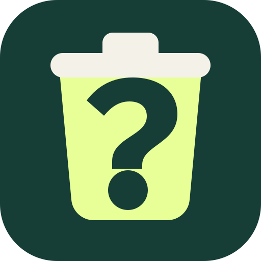

Amtlich belegt
Jede konkrete Empfehlung nennt Quelle, Geltungsgebiet und Prüfdatum.

MilosAppsWelcher Müll?
Entsorgungshinweise werden vorbereitet …
Wohin damit?
Auch Alltagssprache und kleine Tippfehler funktionieren.
Bereit
Jede konkrete Empfehlung nennt Quelle, Geltungsgebiet und Prüfdatum.
Örtliche Systeme werden nur gezeigt, wenn eine kommunale Quelle sie bestätigt.
Akkus, Elektrogeräte, Chemikalien und Medikamente bekommen klare Warnhinweise.